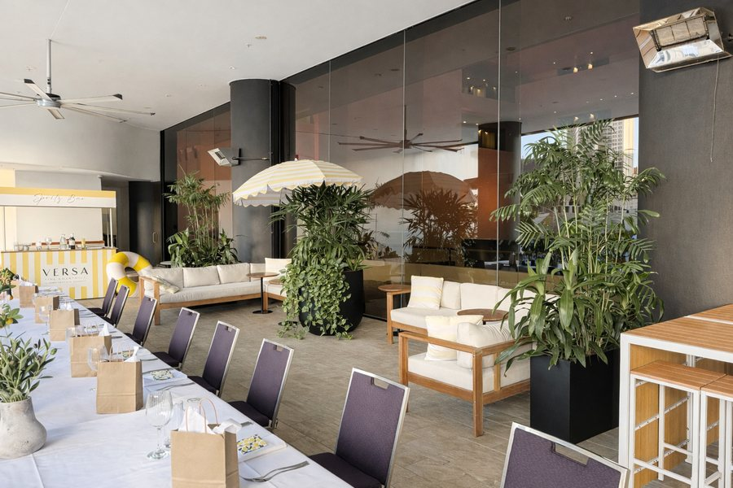

Conference & Event Venues in Brisbane
Tell us what you need in Brisbane. Shortlist within 48 hours, free to you.
Brisbane venues we have walked through.
A few of the Brisbane venues we’ve been through ourselves. For each one you’ll find the venue’s own published capacities, the date we were there, and an honest word about what it suits and what it doesn’t.
-
 The Westin Brisbane
A 298 room CBD hotel with one 450 sqm ballroom that divides in two. Built for the residential conference that does not have to move.
Inspected by CVBS
The Westin Brisbane
A 298 room CBD hotel with one 450 sqm ballroom that divides in two. Built for the residential conference that does not have to move.
Inspected by CVBS
-

InterContinental Brisbane The former Hilton Brisbane, reflagged in July 2025. A 794 sqm ballroom and a level eight pool terrace. IHG publishes areas but no setup capacities. Inspected by CVBS
Brisbane has grown into a serious events city, and the mild winter is a quiet advantage: an outdoor welcome function actually works here. The Brisbane Convention & Exhibition Centre anchors South Bank, with a strong field of river-precinct hotels around it. We source across the CBD, South Bank and the inner suburbs, match your numbers and budget to the right space, and negotiate the rate on your behalf.
What we source in Brisbane
- Convention centre space at South Bank for plenary and exhibition together
- CBD conference hotels and delegate room blocks
- Riverfront and heritage venues for dinners, awards and launches
- Airport precinct meeting space for fly in, fly out programs
- Gold Coast and Sunshine Coast resorts for the reward half of a program
A few Brisbane venues, and what each one is really for.
A spread rather than a ranking, chosen so you can see the shape of the market. Every figure below is the one the venue publishes for itself. We source right across Brisbane, so treat this as a starting point.
Brisbane Convention & Exhibition Centre
South Bank · Great Hall to 3,958 theatre · 44 event rooms
National and international association conferences with a trade floor running alongside.
Ask us about itSofitel Brisbane Central
Brisbane CBD · 416 rooms · Ballroom Le Grand to 1,056 theatre · 11 event rooms
A thousand delegate plenary, the breakouts and the beds without crossing a road.
Ask us about itThe Star Brisbane Event Centre
Queen's Wharf · 340 rooms · Event Centre Ballroom to 1,800 theatre
Gala dinners and awards nights inside a single self contained complex.
Ask us about itRoyal International Convention Centre
Bowen Hills · Halls A, B & C combined to 3,176 theatre
Trade shows and exhibitions, and the alternative when BCEC is held.
Ask us about itBrisbane City Hall
King George Square · Main Auditorium to 1,178 theatre · 11 event rooms
Ceremonial plenaries and gala dinners where the room itself is the point.
Ask us about itHoward Smith Wharves
Howard Smith Wharves · Felons Barrel Hall to 424 banquet · 17 event rooms
Welcome functions, riverfront dinners and client entertaining under the Story Bridge.
Ask us about itNot sure where in Brisbane your event belongs?
A quick steer, based on what you are running. Tell us the detail and we will shortlist what suits it, rather than the obvious names.
Based on venue suitability alone.
Where in Brisbane to hold it.
The area you choose shapes everything from how easily delegates arrive to what you will pay for dinner. These are the ones we source across most, and what each is good for.
South Bank
The only precinct that does plenary and exhibition in the same building. Seventeen hectares of riverfront parkland with the galleries, museum and performing arts centre on the same strip, and the Grey Street hotel cluster next door.
Brisbane CBD
The deepest hotel supply and the shortest walks. Sofitel sits above Central Station, Pullman and Mercure share King George Square, and everything is five to ten minutes on foot.
Queen’s Wharf
A single building program with gala scale, hotel rooms, restaurants and bars on the river. Walkable to the CBD core and across the footbridge to South Bank.
Howard Smith Wharves
The evening, not the day. Seventeen riverfront spaces under the Story Bridge, mostly bars, restaurants and heritage sheds, with a hotel on site.
Fortitude Valley
Smaller premium and design led programs, and the strongest restaurant and bar density in the city. One stop on the rail line from Central.
Brisbane Airport
When the point is not entering the city. Pullman, Novotel and ibis share the Brisbane Airport Conference Centre, so build the food and drink into the venue.
The parts of Brisbane we would raise before you commit.
No destination is right for every brief, and the useful conversation is about where the limits are. These are the ones that change a Brisbane program most often.
August is difficult around the Showgrounds
The Ekka runs in the middle of August each year with a Brisbane public holiday inside it, and bump in and bump out extend that window either side. Royal ICC is effectively out of the market for the month.
September is the busiest month for accommodation
Brisbane Festival runs through September with Riverfire early in the month, which draws the whole city to the river. Riverfront venues and CBD hotels are hardest hit, and it is the month we most often have to work around.
The last airport train leaves at 10:04pm
Airtrain runs every fifteen minutes and puts the terminals twenty minutes from the city, but anyone leaving a gala dinner after about half past nine is on a taxi or a rideshare. It is worth a line in the delegate pack rather than a surprise.
Brisbane is compact, and that is the whole argument for it.

One brief. A real person on the other end.
Everything above this point is information. It is genuinely useful, and no other venue finder in Australia publishes it. But it is not the thing you are actually buying.
What you are buying is someone who has already had the conversation with the person who holds that room, knows what they will move on and when, and will pick up the phone rather than send you a portal login. Whoever takes your Brisbane brief stays your point of contact from the first call through to the final invoice.
Karen, Anthony, Chantelle and RychelleSourcing Australian conference venues since 1989
Venues we can speak for
A near 4,000 seat plenary, 20,000 square metres of exhibition and 44 breakout rooms sit in one building, inside a walkable cultural precinct, twenty minutes from one airport. We start with whether your program actually needs that, because if it does not, the CBD gives you a better week.
The drawbacks as well as the pitch
Every venue has something worth knowing before you sign. A difficult load in, a low ceiling, a pre function space that struggles once the room is full. You will hear that from us at shortlist, not on the day.
Free to you
There is no fee for our service. The sourcing, the local knowledge and the negotiating are all included, and the rate you end up with is usually better than booking direct.
Brisbane venue finding, common questions
How much does it cost to use CVBS to find a venue in Brisbane?
How quickly can you find Brisbane venues?
What is the largest conference venue in Brisbane?
Which Brisbane hotel has the largest ballroom?
Where should a 500 delegate conference be held in Brisbane?
Do you cover group accommodation in Brisbane as well as venues?
Is Brisbane a good incentive destination?
Will Brisbane’s construction program affect our event?
How far is Brisbane Airport from the conference precinct?
Planning something in Brisbane? Tell us about it.
You will have Brisbane options to consider within 48 hours.